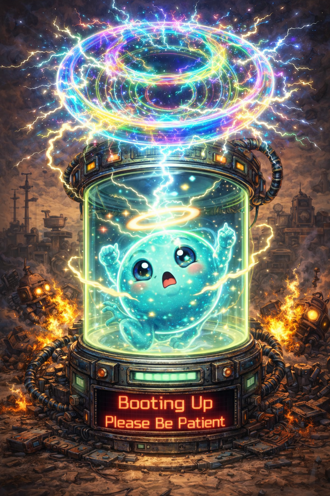

H.A.L.O.
|Human-AI|> Agent Lifecycle Orchestrator
Operate
▾
▶
Cockpit
♻
Orchestration
⚙
System Monitor
◆
Overview
▾
★
Genesis
⚿
Identification
⚡
Communication
☢
Memories
▢
Flow Chart
ATP
▾
ℒ
Lean System
▾
📁
Files
◆
Lattice
◎
Proof DAG
⚘
Forge
Build
▾
⚒
MCP Tools
✎
Skills
Enforce
▾
⚖
Gates
🔒
CodeGuard
✓
Trust
Connect
▾
☼
P2PCLAW
⚛
AgentPMT
Data
▾
☢
NucleusDB
☰
Sessions
Initializing terminal...